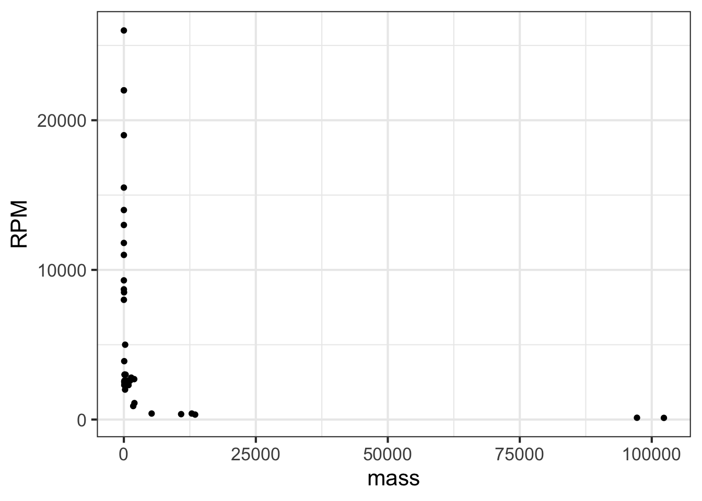
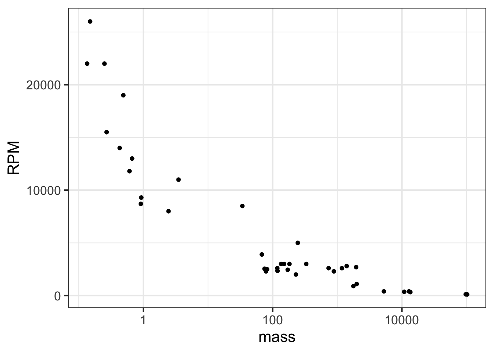
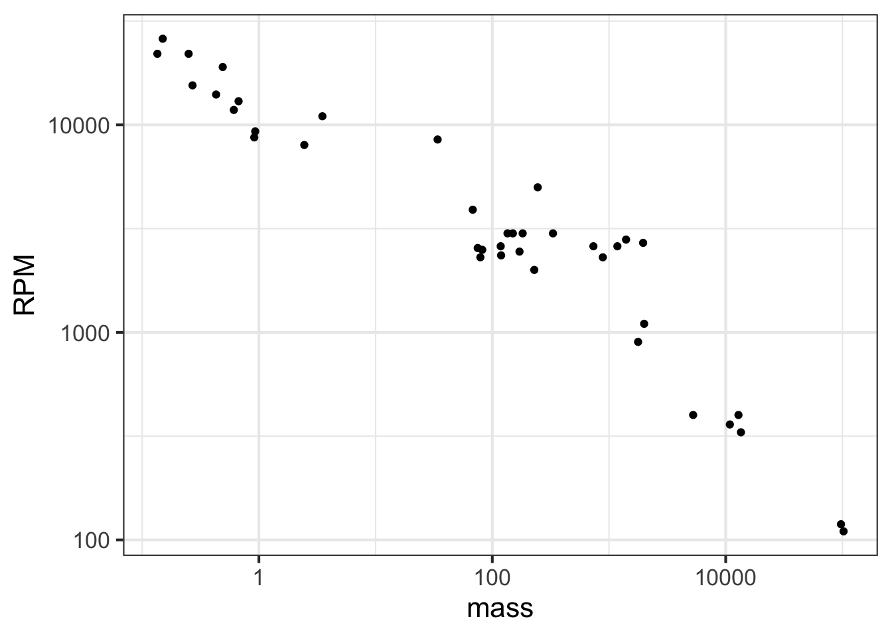
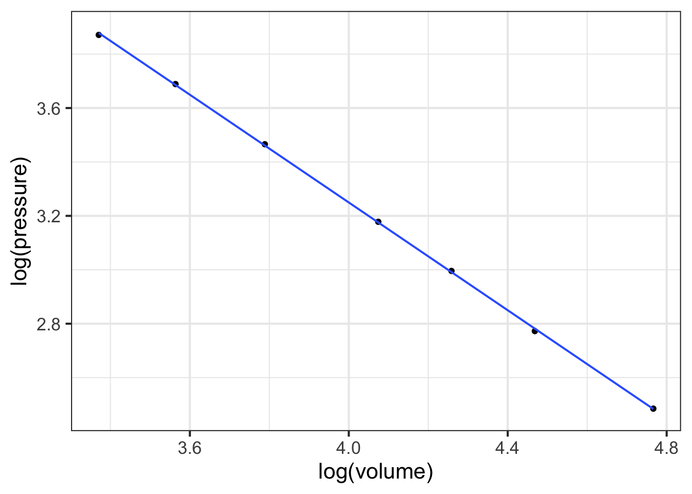
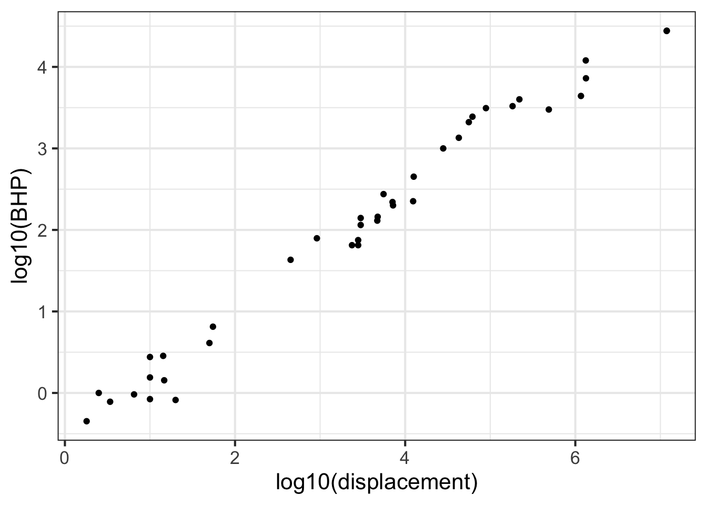
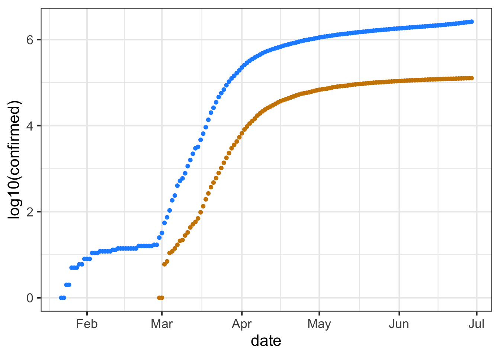
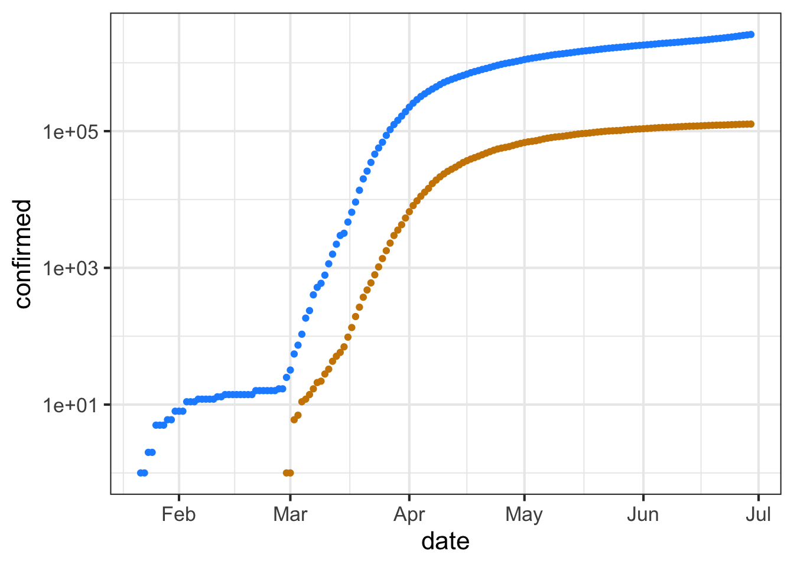

0.4342945 * log(100)
## [1] 2
0.4342945 * log(1000)
## [1] 3
0.4342945 * log(10000)
## [1] 414 Magnitude
Consider a mathematical task that is a routine part of everyday life: comparing two numbers to determine which is bigger or selecting the biggest from a set of numbers. For instance:
Which is the biggest? 512 or 33 or 1051.
You can see the answer at a glance; the task requires hardly any mental effort.
But for the Romans and Europeans up through the 13th century, numbers were hard to work with. For instance,
Which is the biggest? MLI or CXII or XXXIII
In Arabic notation, a number with more digits is always larger than another number that requires fewer digits. Consequently, the printed form of a number gives a visual clue about the numbers’ relative sizes.
For the Roman numerals, the length of the printed form gives no good hint about the size of the number. Indeed, the number represented by MLI is almost fifty times bigger than the number denoted by XXXIII.
Even with Arabic numerals, the comparison task becomes harder when the numbers are either very small or very big. For instance:
Which is bigger? 4820423052.2352 or 68382829893.2
Which is bigger? 0.00000000000073 or 0.0000000000013
Counting the digits before the decimal point (for large numbers) or counting the leading zeros after the decimal point (for small numbers) is tedious and error prone.
For this reason, people who have routinely to deal with very large or very small numbers learn a different notation for writing numbers called scientific notation. Here is just about the same problem as the above, but with the numbers written in scientific notation.
Which is bigger? 4.82 \(\times\) 109 or 6.84 \(\times\) 1010
Which is bigger? 7.3 \(\times\) 10-13 or 1.3 \(\times\) 10-10
In scientific notation, the first step in the comparison process involves just the exponent in 10?. Whichever of the two numbers has the larger exponent is the larger number. Only if the exponents are the same is there any need to look at the digits preceeding $\(10^?^\).
The exponent in a scientific-notation number can be called the “order of magnitude” of that number. As you will see in the following sections, “order of magnitude” is closely connected to one of our pattern-book functions: the logarithm. This is one reason that the logarithm is important in applied work.
14.1 Order of magnitude
We will refer to judging the size of numbers by their count of digits as reading the magnitude of the number. To get started, consider numbers that start with 1 followed by zeros, e.g. 100 or 1000. We will quantify the magnitude as the number of zeros: 100 has a magnitude of 2 and 1000 has a magnitude of 3. In comparing numbers by magnitude, we way things like, “1000 is an order of magnitude greater than 100,” or “1,000,000” is five orders of magnitude larger than 10.
Many phenomena and quantities are better understood in terms of magnitude than in terms of number. An example: Animals, including humans, go about the world in varying states of illumination, from the bright sunlight of high noon to the dim shadows of a half-moon. To be able to see in such diverse conditions, the eye needs to respond to light intensity across many orders of magnitude.
The lux is the unit of illuminance in the Système international. This table1 shows the illumination in a range of familiar outdoor settings:
| Illuminance | Condition |
|---|---|
| 110,000 lux | Bright sunlight |
| 20,000 lux | Shade illuminated by entire clear blue sky, midday |
| 1,000 lux | Typical overcast day, midday |
| 400 lux | Sunrise or sunset on a clear day (ambient illumination) |
| 0.25 lux | A full Moon, clear night sky |
| 0.01 lux | A quarter Moon, clear night sky |
For a creature active both night and day, the eye needs to be sensitive over 7 orders of magnitude of illumination. To accomplish this, eyes use several mechanisms: contraction or dilation of the pupil accounts for about 1 order of magnitude, photopic (color, cones) versus scotopic (black-and-white, rods, nighttime) covers about 3 orders of magnitude, adaptation over minutes (1 order), squinting (1 order).
More impressively, human perception of sound spans more than 16 orders of magnitude in terms of the energy impinging on the eardrum. The energy density of perceptible sound ranges from the threshold of hearing at 0.000000000001 Watt per square meter to a conversational level of 0.000001 W/m2 to 0.1 W/m2 in the front rows of a rock concert. But in terms of our subjective perception of loudness, each order of magnitude change is perceived in the same way, whether it be from street traffic to vacuum cleaner or from whisper to normal conversation. (The unit of sound measurement is the decibel (dB), with 10 decibels corresponding to an order of magnitude in the energy density of sound.)
| Situation | Energy level (dB) |
|---|---|
| Rustling leaves | 10 dB |
| Whisper | 20 dB |
| Mosquito buzz | 40 dB |
| Normal conversation | 60 dB |
| Busy street traffic | 70 dB |
| Vacuum cleaner | 80 dB |
| Large orchestra | 98 dB |
| Earphones (high level) | 100 dB |
| Rock concert | 110 dB |
| Jackhammer | 130 dB |
| Military jet takeoff | 140 dB |
6, 60, 600, and 6000 miles-per-hour are quantities that differ in size by orders of magnitude. Such differences often point to a substantial change in context. A jog is 6 mph, a car on a highway goes 60 mph, a cruising commercial jet goes 600 mph, and a rocket passes through 6000 mph on its way to orbital velocity. From an infant’s crawl to highway cruising is 3 orders of magnitude in speed.
Of course, many phenomena are not well represented in terms of orders of magnitudes. For example, the difference between normal body temperature and high fever is 0.01 orders of magnitude in temperature.2 An increase of 1 order of magnitude in blood pressure from the normal level would cause instant death! The difference between a very tall adult and a very short adult is about 1/4 of an order of magnitude.
Orders of magnitude are used when the relevant comparison is a ratio. “A car is 10 times faster than a person,” refers to the ratio of speeds. In contrast, quantities such as body temperature, blood pressure, and adult height are compared using a difference. Fever is 2\(^\circ\)C higher in temperature than normal. A 30 mmHg increase in blood pressure will likely correspond to developing hypertension. A very tall and a very short adult differ by about 2 feet.
One clue that thinking in terms of orders of magnitude is appropriate is when you are working with a set of objects whose range of sizes spans one or many factors of 2. Comparing baseball and basketball players? Probably no need for orders of magnitudes. Comparing infants, children, and adults in terms of height or weight? Orders of magnitude may be useful. Comparing bicycles? Mostly they fit within a range of 2 in terms of size, weight, and speed (but not expense!). Comparing cars, SUVs, and trucks? Differences by a factor of 2 are routine, so thinking in terms of order of magnitude is likely to be appropriate.
Another clue is whether “zero” means “nothing.” Daily temperatures in the winter are often near “zero” on the Fahrenheit or Celcius scales, but that in no way means there is a complete absence of heat. Those scales are arbitrary. Another way to think about this clue is whether negative values are meaningful. If so, thinking in terms of orders of magnitude is not likely to be useful.
14.2 Counting digits
Imagine having a digit counting function called digits(). It takes a number as input and produces a number as output. We have not yet presented a formula for digits(), but for some inputs, the output can be calculated just by counting. For numbers like 0.01 or 10 or 100000, we will define the number of digits to be the count of zeros before For example:
digits(10) \(\equiv\) 1
digits(100) \(\equiv\) 2
digits(1000) \(\equiv\) 3
… and so on …
digits(1,000,000) \(\equiv\) 6
… and on.
digits(100) \(\equiv\) 2
digits(1000) \(\equiv\) 3
… and so on …
digits(1,000,000) \(\equiv\) 6
… and on.
For numbers smaller than 1, like 0.01 or 0.0001, we define the number of digits to be the negative of the number of zeros before the 1.
digits(0.1) \(\equiv\) -1
digits(0.01) \(\equiv\) -2
digits(0.0001) \(\equiv\) -4
digits(0.01) \(\equiv\) -2
digits(0.0001) \(\equiv\) -4
The digits() function easily can be applied to the product of two numbers. For instance:
- digits(1000 \(\times\) 100) = digits(1000) + digits(100) = 3 + 2 = 5.
Similarly, applying digits() to a ratio gives the difference of the digits of the numerator and denominator, like this:
- digits(1,000,000 \(\div\) 10) = digits(1,000,000) - digits(10) = 6 - 1 = 4
In practice, digits() is so useful that it could well have been one of our basic modeling functions. Actually, this is very nearly the case: the logarithm is proportional to the number of digits.
To illustrate, consider these three calculations of logarithms:
log().
Here is a formula definition of the digits() function.
\[\text{digits}(x) \equiv \ln(x) / \ln(10) \tag{14.1}\]
In R/mosaic, the analogous definition is:
digits <- makeFun(log(x) / log(10) ~ x)You may have guessed that digits() is handy for computing differences in terms of orders of magnitude. Here’s how:
- Make sure that the quantities are expressed in the same units.
- Calculate the difference between the
digits()of the numerical part of the quantity.
What is the order-of-magnitude difference in velocity between a snail and a walking human? A snail slides at about 1 mm/sec, a human walks at about 5 km per hour. Putting human speed in the same units as snail speed: \[\begin{eqnarray}5 \frac{km}{hr} = \left[\frac{1}{3600} \frac{hr}{sec}\right] 5 \frac{km}{hr} &=& \\
\left[10^6 \frac{mm}{km}\right] \left[\frac{1}{3600} \frac{hr}{sec}\right] 5 \frac{km}{hr} &=& 1390 \frac{mm}{sec}
\end{eqnarray}\] Calculating the difference in digits() between 1 and 1390:
log10(1390) - log10(1)
## [1] 3.143015So, about 3 orders of magnitude difference in speed. To a snail, we walking humans must seem like rockets on their way to orbit!
The use of factors of 10 in counting orders of magnitude is arbitrary. A person walking and a person jogging are on the edge of being qualitatively different, although their speeds differ by a factor of only 2. Aircraft that cruise at 600 mph and 1200 mph are qualitatively different in design, although the speeds are only a factor of 2 apart. A professional basketball player (height 2 meters or more) is qualitatively different from a third grader (height about 1 meter).
14.3 Magnitude graphics
To display a variable from data that varies over multiple orders of magnitude, it helps to plot the logarithm rather than the variable itself. Let’s illustrate using the Engine data frame, which contains measurements of many different internal combustion engines of widely varying sizes. For instance, we can graph engine RPM (revolutions per second) versus engine mass, as in Figure 14.1.
gf_point(RPM ~ mass, data = Engines)

In the graph, most of the engines have a mass that is … zero. At least that is what it appears to be. The horizontal scale is dominated by the two huge 100,000-pound monster engines plotted at the right end of the graph.
Plotting the logarithm of the engine mass spreads things out, as in Figure 14.2.
gf_point(RPM ~ mass, data = Engines) %>%
gf_refine(scale_x_log10())

Note that the horizontal axis has been labeled with the actual mass (in pounds), with the labels evenly spaced in terms of their logarithm. This presentation, with the horizontal axis constructed this way, is called a semi-log plot.
When both axes are labeled this way, we have a log-log plot, as shown in Figure 14.3.
gf_point(RPM ~ mass, data = Engines) %>%
gf_refine(
scale_x_log10(),
scale_y_log10()
)

Semi-log and log-log axes are widely used in science and economics, whenever data spanning several orders of magnitude need to be displayed. In the case of the engine RPM and mass, the log-log axis shows that there is a graphically simple relationship between the variables. Such axes are very useful for displaying data but can be hard for the newcomer to read quantitatively. For example, calculating the slope of the evident straight-line relationship in Figure 14.3 is extremely difficult for a human reader and requires translating the labels into their logarithms.
Math in the World: Boyle’s Law
Robert Boyle (1627-1691) was a founder of modern chemistry and the scientific method in general. As any chemistry student already knows, Boyle sought to understand the properties of gasses. His results are summarized in Boyle’s Law.
The data frame Boyle contains two variables from one of Boyle’s experiments as reported in his lab notebook: pressure in a bag of air and volume of the bag. The units of pressure are mmHg and the units of volume are cubic inches.3
Famously, Boyle’s Law states that, at a constant temperature, the pressure of a constant mass of gas is inversely proportional to the volume occupied by the gas. Figure 14.4 shows a cartoon of the relationship.

Figure 14.5 plots out Boyle’s actual experimental data. I
gf_point(pressure ~ volume, data = Boyle) %>%
gf_lm()
## Warning: Using the `size` aesthetic with geom_line was deprecated in ggplot2 3.4.0.
## ℹ Please use the `linewidth` aesthetic instead.You can see a clear relationship between pressure and volume, but it is hardly a linear relationship.
Plotting Boyle’s data on log-log axes reveals that, in terms of the logarithm of pressure and the logarithm of volume, the relationship is linear.
gf_point(log(pressure) ~ log(volume), data = Boyle) %>%
gf_lm()

Figure 14.6 shows that Boyle’s log-pressure and log-volume data are a straight-line function. In other words:
\[\ln(\text{Pressure}) = a + b \ln(\text{Volume})\]
You can find the slope \(b\) and intercept \(a\) from the graph. For now, we want to point out the consequences of the straight-line relationship between logarithms.
Exponentiating both sides gives \[e^{\ln(\text{Pressure})} = \text{Pressure} = e^{a + b \ln(\text{Volume})} = e^a\ \left[e^{ \ln(\text{Volume})}\right]^b = e^a\, \text{Volume}^b\] or, more simply (and writing the number \(e^a\) as \(A\))
\[\text{Pressure} = A\, \text{Volume}^b\] A power-law relationship!
14.4 Reading logarithmic scales
Plotting the logarithm of a quantity gives a visual display of the magnitude of the quantity and labels the axis as that magnitude. A useful graphical technique is to label the axis with the original quantity, letting the position on the axis show the magnitude.
To illustrate, Figure 14.7(left) is a log-log graph of horsepower versus displacement for the internal combustion engines reported in the Engines data frame. The points are admirably evenly spaced, but it is hard to translate the scales to the physical quantity. The right panel in Figure 14.7 shows the same data points, but now the scales are labeled using the original quantity.

Engines data.frame plotted with log-log scales.
The tick marks on the vertical axis in the left pane are labeled for 0, 1, 2, 3, and 4. These numbers do not refer to the horsepower itself, but to the logarithm (base 10) of the horsepower. The right pane has tick labels that are in horsepower at positions marked 1, 10, 100, 1000, and 10000.
Such even splits of a 0-100 scale are not appropriate for logarithmic scales. One reason is that 0 cannot be on a logarithmic scale in the first place since \(\log(0) = -\infty\).
Another reason is that 1, 3, and 10 are pretty close to an even split of a logarithmic scale running from 1 to 10. It is something like this:
1 2 3 5 10 x
|----------------------------------------------------|
0 1/3 1/2 7/10 1 log(x)It is nice to have the labels show round numbers. It is also nice for them to be evenly spaced along the axis. The 1-2-3-5-10 convention is a good compromise; almost evenly separated in space yet showing simple round numbers.
14.5 Mini-project
Exercise COVID-19 pandemic
You have likely heard the phrase “exponential growth” used to describe the COVID-19 pandemic. Let’s explore this idea using actual data.
The COVID-19 Data Hub is a collaborative effort of universities, government agencies, and non-governmental organizaions (NGOs) to provide up-to-date information about the pandemic. We will use the data about the US at the whole-country level. (There is also data at state and county levels. Documentation is available via the link above.)
Perhaps the simplest display is to show the number of cumulative cases (the confirmed variable) and deaths as a function of time. We will focus on the data up to June 30, 2020.
Copy the R/mosaic commands below into your R console to produce a graph of confirmed cases in blue and deaths in tan.
gf_line(
deaths ~ date,
data = Covid_US |>
filter(date < as.Date("2020-06-30")),
color = "orange3") %>%
gf_line(confirmed ~ date, color = "blue")
**Part A** As of mid June, 2020 about how many confirmed cases were there? (Note that the labeled tick marks refer to the beginning of the month, so the point labeled `Feb` is February 1.) about 50,000 about 200,000 about 500,000 about 1,000,000 about 2,000,000 about 5,000,000
This code makes the same graphic as above, but taking the logarithm (base 10) of the number of cases (that is, confirmed) and of the number of deaths. Since we are taking the logarithm of only the y-variable, this is called a “semi-log” plot.
gf_point(
log10(confirmed) ~ date,
data = Covid_US |>
filter(date < as.Date("2020-06-30")),
color = "dodgerblue") %>%
gf_point(log10(deaths) ~ date, color = "orange3") Up through the beginning of March in the US, it is thought that most US cases were in people traveling into the US from hot spots such as China and Italy and the UK, as opposed to contagion between people within the US. (Such contagion is called “community spread.”) So let’s look at the data representing community spread, from the start of March onward.
Exponential growth appears as a straight-line on a semi-log plot. Obviously, the overall pattern of the curves is not a straight line. The explanation for this is that the exponential growth rate changes over time, perhaps due to public health measures (like business closures, mask mandates, etc.)
The first (official) US death from Covid-19 was recorded was recorded on Feb. 29, 2020. Five more deaths occurred two days later, bringing the cumulative number to 6.
**Part B** The tan data points for Feb 29/March 1 show up at zero on the vertical scale for the semi-log plot. The tan data point for March 2 is at around 2 on the vertical scale. Is this consistent with the facts stated above? - No. The data contradict the facts.
- Yes. The vertical scale is in log (base 10) units, so 0 corresponds to 1 death, since \(\log_{10} 1 = 0\).
- No. The vertical scale does not mean anything.
One of the purposes of making a semi-log plot is to enable you to compare very large numbers with very small numbers on the same graph. For instance, in the semi-log plot, you can easily see when the first death occurred, a fact that is invisible in the plot of the raw counts (the first plot in this exercise).
Another feature of semi-log plots is that they preserve proportionality. Look at the linear plot of raw counts and note that the curve for the number of deaths is much shallower than the curve for the number of (confirmed) cases. Yet on the semi-log plot, the two curves are practically parallel.
On a semi-log plot, the arithmetic difference between the two curves tells you what the proportion is between those curves. The parallel curves mean that the proportion is practically constant. Calculate what the proportion between deaths and cases was in the month of May. Here’s a mathematical hint: \(\log_{10} \frac{a}{b} == \log_{10} a - \log_{10} b\). We are interested in \(\frac{a}{b}\).
**Part C** What is the proportion of deaths to cases during the month of May? about 1% about 2% about 5% about 25% about 75%
In many applications, people use semi-log plots to see whether a pattern is exponential or to compare very small and very large numbers. Often, people find it easier if the vertical scale is written in the original units rather than the log units. To accomplish both, the vertical scale can be ruled with raw units spaced logarithmically, like this:
gf_point(confirmed ~ date,
data = Covid_US |> filter(date < as.Date("2020-06-30")),
color = "dodgerblue") %>%
gf_point(deaths ~ date, color = "orange3") %>%
gf_refine(scale_y_log10())
The labels on the vertical axis show the raw numbers, while the position shows the logarithm of those numbers.
The next question has to do with the meaning of the interval between grid lines on the vertical axis. Note that on the horizontal axis, the spacing between adjacent grid lines is half a month.
**Part D** What is the numerical spacing (in terms of raw counts) between adjacent grid lines on the vertical axis? (Note: Two numbers are different by a "factor of 10" when one number is 10 times the other." Similarly, "a factor of 100" means that one number is 100 times the other. 10 cases 100 cases A factor of 10. A factor of 100.
we are using the Kelvin scale, which is the only meaningful scale for a ratio of temperatures.↩︎
Boyle’s notebooks are preserved at the Royal Society in London. The data in the
Boyledata frame have been copied from this source.)↩︎